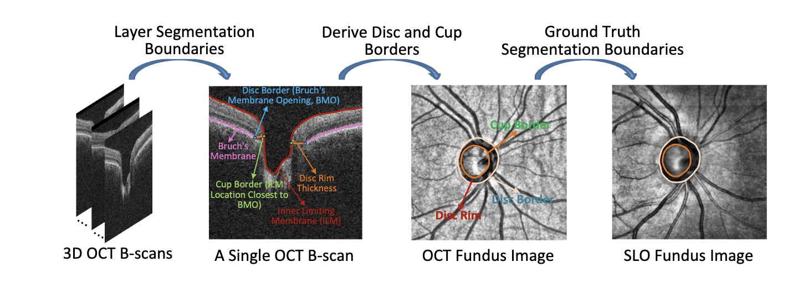
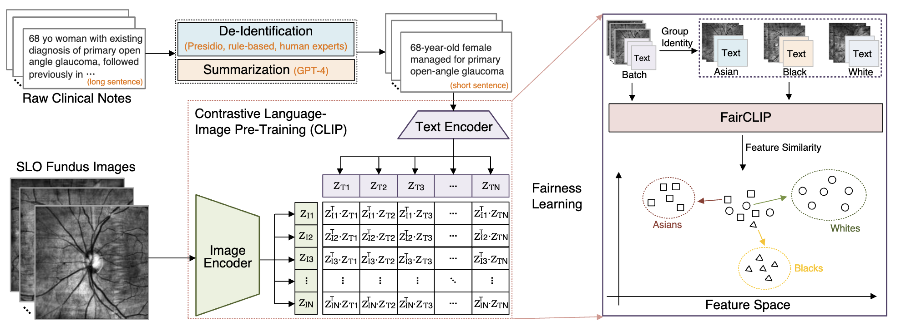
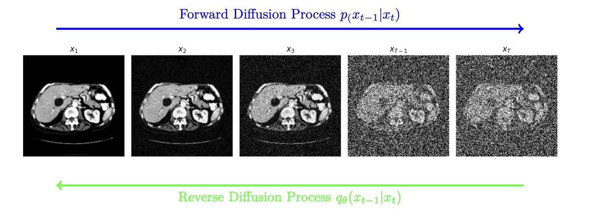
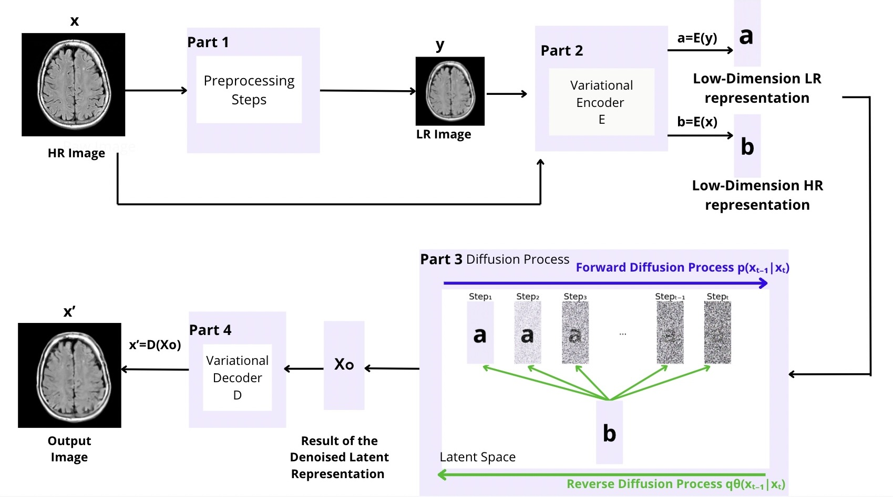

Pinned GitHub Projects

Publications

FairSeg: A Large-Scale Medical Image Segmentation Dataset for Fairness Learning Using Segment Anything Model with Fair Error-Bound Scaling
Yu Tian*, Min Shi*, Yan Luo*, Ava Kouhana, Tobias Elze, Mengyu Wang
International Conference on Learning Representations (ICLR), 2024

FairCLIP: Harnessing Fairness in Vision-Language Learning
Yan Luo*, Min Shi*, Muhammad Osama Khan*, Muhammad Muneeb Afzal, Hao Huang, Shuaihang Yuan, Yu Tian, Luo Song, Ava Kouhana, Tobias Elze, Yi Fang, Mengyu Wang
Conference on Computer Vision and Pattern Recognition (CVPR), 2024

Direct Generation of Attenuation and Scatter Correction of Brain PET Data Using a Conditional Latent Diffusion Model
Ava Kouhana, M. Jafaritadi, G. Chinn, C.S. Levin
IEEE Nuclear Science Symposium and Medical Imaging Conference (NSS MIC), 2024

Super-Resolution Tomographic Image Reconstruction Using Latent Diffusion Models
Ava Kouhana, M. Jafaritadi, G. Chinn, C.S. Levin
IEEE Nuclear Science Symposium and Medical Imaging Conference (NSS MIC), 2024
Grants & Awards
- Recipient of 2024 IEEE Nuclear Science, Medical Imaging Trainee Grant (NSS MIC)
- 2nd place Outstanding Poster at the 20th anniversary of ICME Stanford Research Symposium